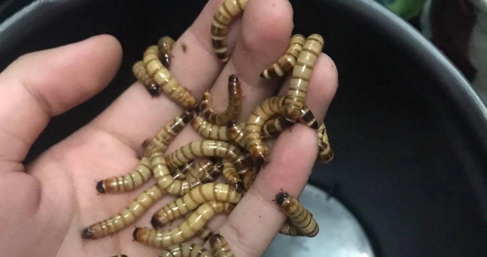

|
As an avid gamer, I find solace and excitement in immersing myself in virtual worlds
for hours on end, relishing the challenges and adventures they offer. Despite my love for gaming, I often feel a sense of shyness
when meeting new people, preferring the comfort of familiar settings. In my downtime, I indulge in the satisfying puzzle-solving
of Rubik's Cube, finding peace and focus in the rhythmic twists and turns of the colorful blocks.
Beyond gaming and puzzle-solving, I also enjoy exploring the rich narratives and vibrant animation of anime series, delving into
fantastical realms and compelling storylines that ignite my imagination. Whether I'm navigating through digital landscapes, conquering
virtual foes, or unraveling the mysteries of a Rubik's Cube, these hobbies provide me with both entertainment and a sense of accomplishment.
Despite my initial hesitance in social situations, my passions for gaming, puzzle-solving, and anime serve as outlets for self-expression and creativity,
enriching my life in meaningful ways.
|
|
JAMIR A GUIBAO
|
|
|
|
Solving the 3x3 Rubik's Cube has become a captivating pursuit that
fuels my curiosity and sharpens my problem-solving skills, offering a welcome challenge with each twist and
turn. Thanks to the patient and insightful guidance from my friend Lara, I embarked on a journey of mastering
Rubik's Cube solving techniques, culminating in achieving a commendable solve time of 33 seconds. Now, as I
delve into the intricacies of the F2L method to further enhance my speed and efficiency, I'm excited to push the l
imits of my Rubik's Cube-solving abilities and continue exploring the fascinating world of speedcubing.
|
|
In my 1700 hours spent immersed in War Thunder, I've dedicated myself
to mastering the intricacies of aerial combat, meticulously studying every aircraft's weaknesses to gain a tactical edge.
Understanding enemy vulnerabilities allows me to execute calculated maneuvers and emerge victorious in intense dogfights.
Among the formidable arsenal of aircraft, the MiG-19S stands as my favorite, its blend of speed, maneuverability, and firepower
perfectly aligning with my aggressive yet strategic playstyle.
|
|
|

|
Fascinated by the remarkable life cycle of mealworms, I embarked on a journey to
cultivate them, drawn by their potential as a sustainable food source for chickens. As I delved deeper into their care and breeding,
I became captivated by their resilience and adaptability, finding joy in observing their growth and development. Inspired by the
prospect of providing nutritious treats for chickens, I also felt a longing to reintroduce these feathered friends into my life as cherished
pets, fostering a deeper connection with nature and the cycle of life. Through this endeavor, I've found fulfillment in nurturing both the
tiny mealworms and the potential companionship of chickens once more.
|
|